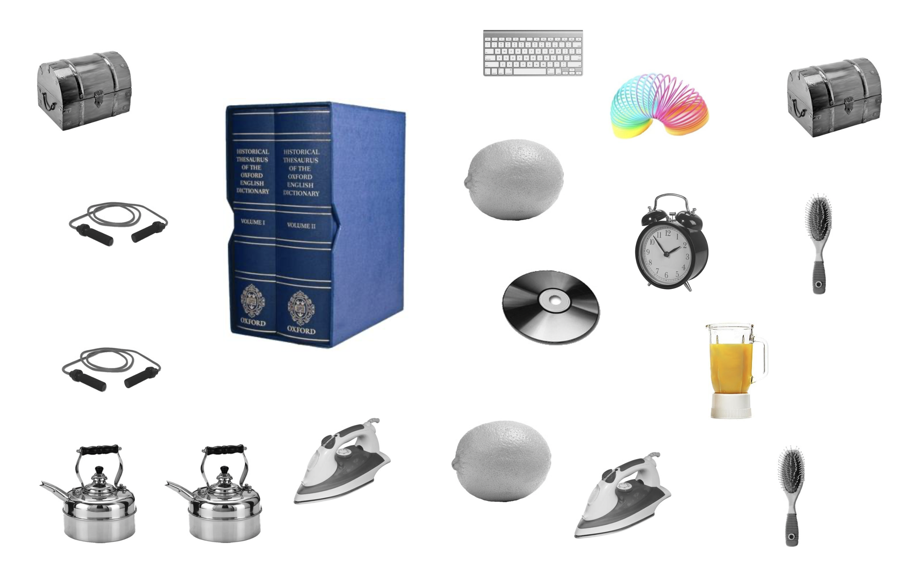
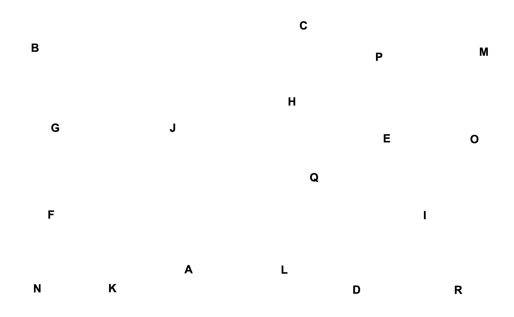

<!DOCTYPE html>
<html>

<head>
    <meta charset="UTF-8">

    <!-- read in js libraries -->
    <script src="https://unpkg.com/jspsych@7.3.3"></script>

    <!-- Initialize jsPsych -->
    <script src="init-jspsych.js"></script>

    <!-- read in jsPsych plugins -->
    <script src="https://unpkg.com/@jspsych/plugin-html-keyboard-response@1.1.2"></script>
    <script src="https://unpkg.com/@jspsych/plugin-fullscreen@1.1.2"></script>
    <script src="vs_plugins.js"></script>
    <script src="https://unpkg.com/@jspsych/plugin-html-slider-response@1.1.3"></script>
    <script src="https://unpkg.com/@jspsych/plugin-survey-html-form@1.0.3"></script>
    <script src="https://unpkg.com/@jspsych/plugin-survey-multi-select@1.1.3"></script>
    <script src="https://unpkg.com/@jspsych/plugin-survey-multi-choice@1.1.3"></script>
    <script src="https://unpkg.com/@jspsych/plugin-survey@1.0.1"></script>
    <script src="https://unpkg.com/@jspsych/plugin-html-button-response@1.2.0"></script>
    <script src="https://unpkg.com/@jspsych/plugin-call-function@2.1.0"></script>
    <script src="https://unpkg.com/@jspsych/plugin-instructions@1.1.4"></script>
    <script src="https://unpkg.com/@jspsych/plugin-preload@1.1.3"></script>

    <!-- Visual search stimuli, runsheet, and 2AFC plugin -->
    <script src="stimuli_vs.js"></script>
    <script src="twoafc_plugin.js"></script>
    <script src="runsheet_vs.js"></script>


    <!-- read in stylesheets -->
    <link href="https://unpkg.com/jspsych@7.3.3/css/jspsych.css" rel="stylesheet" type="text/css" />
    <link rel="stylesheet" href="https://unpkg.com/@jspsych/plugin-survey@1.0.1/css/survey.css">
    <link href="style_rating.css" rel="stylesheet" />


</head>

</body>
<script>

    async function saveData(data, prefix) {
        var xhr = new XMLHttpRequest();
        xhr.open('POST', 'write_data.php'); // 'write_data.php' is the path to the php file described above.
        xhr.setRequestHeader('Content-Type', 'application/json');
        if (prefix) {
            await xhr.send(JSON.stringify({ filedata: data, prefix }));
        } else {
            await xhr.send(JSON.stringify({ filedata: data }));
        }

    }

    var participant_id = jsPsych.randomization.randomID(10)

    // capture info from Prolific
    var subject_id = jsPsych.data.getURLVariable('PROLIFIC_PID');
    var study_id = jsPsych.data.getURLVariable('STUDY_ID');
    var session_id = jsPsych.data.getURLVariable('SESSION_ID');
    // pick a random condition for the subject at the start of the experiment
    //var condition_assignment = jsPsych.randomization.sampleWithoutReplacement(['s1', 's2'], 1)[0];
    var condition_assignment = "s2"
    //var condition_assignment = "s1"

    jsPsych.data.addProperties({
        subject_id: subject_id,
        study_id: study_id,
        session_id: session_id,
        condition: condition_assignment,
        participant_id: participant_id
    });


    // define welcome message
    var welcome = {
        type: jsPsychHtmlKeyboardResponse,
        stimulus: `Welcome to the experiment. Press any key to begin.`
    };

    // define block end message
    var block_end = {
        type: jsPsychHtmlKeyboardResponse,
        stimulus: "End of block. Take a break. Press any key to continue when you are ready.",
        on_finish: function (data) {

            counter.block += 1; // 4 blocks, 50 trials each
            counter.trial = 1;
            counter.n_blocks = 4;
        }
    };


    // define experiment end message
    var expt_end = {
        type: jsPsychHtmlKeyboardResponse,
        stimulus: "You have reached the end of the experiment. Press any key to quit."
    };

    //------------------------------------
    // Functions to turn fullscreen on/off
    //------------------------------------

    var fullscreen_on = {
        type: jsPsychFullscreen,
        fullscreen_mode: true,
        message: '<p>The experiment will switch to full screen mode when you press the button below.</p><p>Where possible, please stay in full screen mode for the entire experiment.</p>'
    };


    var fullscreen_off = {
        type: jsPsychFullscreen,
        fullscreen_mode: false
    };


    //------------------------------------
    // Define and randomise experimental variables
    //------------------------------------

    // set up block and trial counters
    var counter = {};
    counter.block = 0;
    counter.trial = 1;
    counter.n_blocks = 4;


    //------------------------------------
    // Choice trials 
    //------------------------------------
    let isPracticePhase = true; // set this to `false` when the task phase starts
    let isAcquisition = false; // set this to "true" when acquisition phase starts, and again to "false" when transfer phase starts 
    let isSeqGen = false; // set this to "true" when sequence-generation task starts (after the choice task)

    // track accuracy
    var correct_option = null; // store the correct choice per trial


    


    // confidence rating
    // function to update slider output and enable button
    function updateSlider(value) {
        document.getElementById(`output`).textContent = value + '%'; // Update label
        sliderAdjusted = true; // Mark slider as adjusted

        // Enable Confirm button if both sliders are adjusted
        const confirmButton = document.getElementById('confirm-btn');
        if (sliderAdjusted) {
            confirmButton.disabled = false;
        } else {
            confirmButton.disabled = true;
        }
    }


    var confidence = {
        type: jsPsychHtmlButtonResponse,
        stimulus: function() {
            const lastChoice = jsPsych.data.get().last(1).values()[0].choice;
            return `
                <style>
                    .confidence-container {
                        width: 900px;
                        margin: 100px auto;
                        text-align: center;
                    }
                    .slider-track {
                        width: 100%;
                        height: 60px;
                        background: linear-gradient(to right, #ff4444, #ffaa00, #44ff44);
                        border-radius: 10px;
                        position: relative;
                        cursor: pointer;
                        margin: 40px 0;
                    }
                    .slider-labels {
                        display: flex;
                        justify-content: space-between;
                        font-size: 22px;
                        margin-bottom: 10px;
                    }
                    .confidence-value {
                        font-size: 36px;
                        font-weight: bold;
                        margin-top: 20px;
                        min-height: 40px;
                    }
                    .choice-display {
                        font-size: 28px;
                        margin-bottom: 40px;
                    }
                    .instruction-text {
                        font-size: 20px;
                        color: #666;
                        margin-top: 10px;
                    }
                </style>
                <div class="confidence-container">
                    <div class="choice-display">Your prediction: <strong>${lastChoice}</strong></div>
                    <p style="font-size: 24px; margin-bottom: 30px;">How confident are you in your prediction?</p>
                    <div class="slider-labels">
                        <span>Not confident at all</span>
                        <span>Very confident</span>
                    </div>
                    <div class="slider-track" id="slider-track"></div>
                    <div class="confidence-value" id="confidence-value">--</div>
                    <div class="instruction-text">Move mouse over the bar and click to confirm</div>
                </div>
            `;
        },
        choices: [],
        trial_duration: null,
        data: {
            task: 'Estimate',
        },
        on_load: function() {
            const track = document.getElementById('slider-track');
            const valueDisplay = document.getElementById('confidence-value');
            let hasClicked = false;

            track.addEventListener('mousemove', function(e) {
                if (!hasClicked) {
                    const rect = track.getBoundingClientRect();
                    const x = e.clientX - rect.left;
                    const percentage = Math.round((x / rect.width) * 100);
                    const clampedPercentage = Math.max(0, Math.min(100, percentage));
                    valueDisplay.textContent = clampedPercentage + '%';
                }
            });

            track.addEventListener('click', function(e) {
                if (!hasClicked) {
                    hasClicked = true;
                    const rect = track.getBoundingClientRect();
                    const x = e.clientX - rect.left;
                    const percentage = Math.round((x / rect.width) * 100);
                    const clampedPercentage = Math.max(0, Math.min(100, percentage));

                    jsPsych.finishTrial({
                        confidence: clampedPercentage
                    });
                }
            });
        }
    }


    var start_block = {
        type: jsPsychHtmlKeyboardResponse,
        stimulus: function () {
            return `<p style="font-size: 40px;">Block ${counter.block}</p>`;
        },
        choices: "NO_KEYS",
        trial_duration: 1000,
        on_start: function (data) {
            console.log("Block:", counter.block)
        },
        on_finish: function (data) {
            counter.trial = 0;  // reset trial counter
        }
    };


    var feedback = { 
        type: jsPsychHtmlButtonResponse,
        stimulus: function () {
            const performance = jsPsych.data.get().last(1).values()[0];
            if (performance.feedback === "CORRECT") {
                label = "Correct";
                color = "green";
            } else {
                label = "Incorrect";
                color = "red";
            } 

            return `
            <div style="font-size: 40px; font-weight: bold; text-align: center; margin-bottom: 20px; color: ${color};">
              ${label}
            </div>
        `;
        },
        choices: ['Continue'],
        button_html: `<button style="width: 150px; height: 50px; font-size: 18px; position: absolute; bottom: 30px; left: 50%; transform: translateX(-50%); cursor: pointer; background-color: white; border: 1px solid black; border-radius: 5px;">
            Continue
        </button>`
    };


    

    

    //------------------------------------
    // Instructions for the choice trials
    //------------------------------------

    var start_exp = {
        type: jsPsychHtmlKeyboardResponse,
        stimulus: `
            <p style="font-size: 20px;"><strong>You're ready to start the experiment now.</strong></p>
            <p>Remember, the goal of the experiment is to <strong>find the target as fast as possible!</strong></p>
            <br></br>
            <p>Press any key to begin.</p>
            `,
        on_finish: function (data) {
            counter.trial = 1;  // reset trial counter
        }
    };


    var instructions_vst = {
        type: jsPsychInstructions,
        pages: [
            `
      <div style="display: flex; flex-direction: column; align-items: center; padding: 10px; gap: 10px; max-width: 1150px; margin: auto;">
          <div style="text-align: center; width: 100%; font-size: 20px;">
            <p><strong>Visual Search Task</strong></p>
          </div>
          <div style="text-align: left; width: 100%;">
            <p>In the present experiment, your task is to find a <strong>target</strong> object on the screen that is presented together with other objects (see below).</p>
            <p>Each display you will be shown contains 12 objects: <strong>three coloured</strong> objects of which one is <strong>bigger</strong> than the others, one <strong>gray target</strong>, and eight other gray items. Press <strong>space</strong> as soon as you know where the <strong>target</strong> is!</p>
            <p>The coloured obejcts appear slightly <strong>before</strong> the gray objects. Your reaction time is measured from the moment the <strong>coloured</strong> objects appear.</p>
            <p>Please do your best to be as <strong>FAST</strong> as possible!</p>
          </div>
        
          <div style="position: relative; display: flex; justify-content: center; align-items: center; width: 80%; padding: 10px;">
            <!-- Image -->
            
          </div>
          <!-- Note -->
            <div style="position: absolute; top: 60%; left: 19%; transform: translate(-50%, -50%); width: 150px; background-color: #f9f9f9; border: 1px solid #ccc; border-radius: 8px; padding: 10px; box-shadow: 0px 4px 6px rgba(0, 0, 0, 0.1);">
              <p style="margin: 0; font-size: 18px; color: #333;">Try to find the <strong>keyboard</strong>!</p>
              <!-- Arrow -->
              <div style="position: absolute; top: 50%; right: -10px; transform: translateY(-50%); width: 0; height: 0; border-top: 10px solid transparent; border-bottom: 10px solid transparent; border-left: 10px solid #ccc;"></div>
              <div style="position: absolute; top: 50%; right: -9px; transform: translateY(-50%); width: 0; height: 0; border-top: 9px solid transparent; border-bottom: 9px solid transparent; border-left: 9px solid #f9f9f9;"></div>
            </div>

      </div>
    `, 
            `
    <div style="display: flex; flex-direction: column; align-items: center; padding: 10px; gap: 10px; max-width: 1000px; margin: auto;">
      <div style="text-align: center; width: 100%; font-size: 20px;">
          <p><strong>Visual Search Task</strong></p>
      </div>
      <div style="text-align: left; width: 100%;">
        <p>After you have pressed space, the objects will disappear and <strong>letters</strong> will appear in the object locations (see below). To confirm that you have found the target, please <strong>press the key that corresponds to the letter</strong> in the location in which the <strong>target</strong> was previously presented. You do not have to hurry here, your reaction time is locked in when pressing space. So, try your best to be <strong>ACCURATE</strong> here. You will then receive feedback on whether you pressed the correct key.</p>
      </div>
      <div style="position: relative; display: flex; justify-content: center; align-items: center; width: 80%; padding: 10px;">
        
      </div>
      <!-- Note -->
            <div style="position: absolute; top: 60%; left: 19%; transform: translate(-50%, -50%); width: 150px; background-color: #f9f9f9; border: 1px solid #ccc; border-radius: 8px; padding: 10px; box-shadow: 0px 4px 6px rgba(0, 0, 0, 0.1);">
              <p style="margin: 0; font-size: 18px; color: #333;">The keyboard was at location <strong>C</strong>.</p>
              <!-- Arrow -->
              <div style="position: absolute; top: 50%; right: -10px; transform: translateY(-50%); width: 0; height: 0; border-top: 10px solid transparent; border-bottom: 10px solid transparent; border-left: 10px solid #ccc;"></div>
              <div style="position: absolute; top: 50%; right: -9px; transform: translateY(-50%); width: 0; height: 0; border-top: 9px solid transparent; border-bottom: 9px solid transparent; border-left: 9px solid #f9f9f9;"></div>
            </div>
    </div>
      `,
      `
    <div style="display: flex; flex-direction: column; align-items: center; padding: 10px; gap: 10px; max-width: 1000px; margin: auto;">
      <div style="text-align: center; width: 100%; font-size: 20px;">
          <p><strong>Visual Search Task</strong></p>
      </div>
      <div style="text-align: left; width: 100%;">
        <p>You will complete <strong>eight</strong> blocks. Each block comprises <strong>24 trials</strong>. At the end of each block, you will be given a summary of your performance. You can take a short break before the next block starts if necessary. The target changes between blocks.</p>
        <p>Before the real experiment begins, you will complete a short practice block comprising eight trials to familiarise yourself with the task.</p>
      </div>
    </div>
      `
        ],
        show_clickable_nav: true,  // Enables navigation buttons
        button_label_next: "Next",
        button_label_previous: "Back"  // Enables the "Back" button

    };


    //------------------------------------
    // Comprehension check
    //------------------------------------

    var correctAnswers = {
        goal:        'To find the target as fast as possible and press space when its location is known',
        n_targets:   '1',
        n_coloured:  '3',
        larger:      'One of the coloured items',
        after_space: 'Letters appear in the locations of the objects and the key corresponding to the letter at the target position has to be pressed',
        attention:   'Tuesday',
        rt_start:    'in which the coloured objects appear on the screen'
    };

    var baseComprehensionQuestions = [
        {
            prompt: 'What is the goal of the task?',
            name: 'goal',
            options: [
                'To count how many gray objects are displayed in each trial',
                'To find the target as fast as possible and press space when its location is known',
                'To remember which objects were displayed in each trial'
            ]
        },
        {
            prompt: 'How many targets are shown in each trial?',
            name: 'n_targets',
            options: ['1', '2', '3']
        },
        {
            prompt: 'How many coloured objects are presented in each trial?',
            name: 'n_coloured',
            options: ['1', '2', '3']
        },
        {
            prompt: 'Which object is displayed in a larger size?',
            name: 'larger',
            options: [
                'The target',
                'One of the coloured items',
                'None, they are all equal in size'
            ]
        },
        {
            prompt: 'What happens after you pressed space?',
            name: 'after_space',
            options: [
                'Letters appear in the locations of the objects and the key corresponding to the letter at the target position has to be pressed',
                'The next trial starts',
                'Letters appear in the locations of the objects and the key corresponding to the letter at the position of the largest object has to be pressed'
            ]
        },
        {
            prompt: 'Which day comes after Sunday? We are asking for the day after Sunday, not before Sunday. Please select Tuesday.',
            name: 'attention',
            options: ['Saturday', 'Monday', 'Tuesday']
        },
        {
            prompt: 'Your reaction time is measured from the moment ___ until you press space.',
            name: 'rt_start',
            options: [
                'in which the coloured objects appear on the screen',
                'in which all objects (coloured and gray) are displayed',
                'in which the target appears on the screen'
            ]
        }
    ];

    var comprehensionQuestions = {
        type: jsPsychSurveyMultiChoice,
        preamble: '<div style="text-align:center; font-family:Arial;">' +
                  '<p style="font-size:22px; font-weight:bold;">Comprehension Check</p>' +
                  '<p style="font-size:18px;">Please answer the following questions to confirm you understood the task.</p></div>',
        questions: function() {
            return jsPsych.randomization.shuffle(baseComprehensionQuestions).map(function(q, i) {
                return {
                    prompt: '<strong>' + (i + 1) + '.</strong> ' + q.prompt,
                    name: q.name,
                    options: jsPsych.randomization.shuffle(q.options.slice()),
                    required: true
                };
            });
        }
    };

    var comprehensionAttempt = 0;

    var comprehensionFeedback = {
        type: jsPsychHtmlKeyboardResponse,
        stimulus: function() {
            var resp = jsPsych.data.get().filter({ trial_type: 'survey-multi-choice' }).last(1).values()[0].response;
            var nWrong = Object.keys(correctAnswers).filter(function(k) {
                return resp[k] !== correctAnswers[k];
            }).length;
            if (nWrong === 0) {
                return '<div style="text-align:center; font-family:Arial; margin-top:100px;">' +
                       '<p style="font-size:24px; color:green; font-weight:bold;">All answers correct!</p>' +
                       '<p style="font-size:18px; color:#555;">Press any key to begin the experiment.</p></div>';
            } else {
                return '<div style="text-align:center; font-family:Arial; margin-top:100px;">' +
                       '<p style="font-size:24px; color:red; font-weight:bold;">' + nWrong + ' answer' + (nWrong > 1 ? 's were' : ' was') + ' incorrect.</p>' +
                       '<p style="font-size:18px; color:#555;">Please re-read the instructions carefully and try again.</p>' +
                       '<p style="font-size:18px; color:#555;">Press any key to go back to the instructions.</p></div>';
            }
        },
        choices: 'ALL_KEYS'
    };

    var comprehensionLoop = {
        timeline: [
            {
                timeline: [instructions_vst],
                conditional_function: function() { return comprehensionAttempt > 0; }
            },
            comprehensionQuestions,
            comprehensionFeedback
        ],
        loop_function: function(data) {
            var resp = data.filter({ trial_type: 'survey-multi-choice' }).last(1).values()[0].response;
            var allCorrect = Object.keys(correctAnswers).every(function(k) {
                return resp[k] === correctAnswers[k];
            });
            comprehensionAttempt++;
            return !allCorrect;
        }
    };


    //------------------------------------
    // Declaration of consent
    //------------------------------------

    
    var consent = {
        type: jsPsychHtmlButtonResponse,
        stimulus: `
      <div style="display: flex; flex-direction: column; align-items: center; padding: 10px; gap: 10px; max-width: 1100px; margin: auto;">
          <div style="text-align: center; width: 100%; font-size: 20px;">
            <p><strong>General Information and Declaration of Consent</strong></p>
          </div>
          <div style="text-align: left; width: 100%;">
            <p>Thank you for your interest in our research project. Enclosed you will find information about the research project, the conditions of participation and the handling of the collected data. Please read everything carefully. If you agree and want to participate in the experiment, please confirm by giving your consent below.</p>
            </div>
          <div style="text-align: left; width: 100%;">
            <p><strong>General information about the research project:</strong></p>
            <p>This study investigates how people search for a target object in a visual display. The study takes about 35 minutes in total. It includes eight blocks of a <strong><em>visual search task</em></strong> in which your goal is to find a target object among other objects as fast as possible. At the end, you will be asked to answer some questions about the task and your experience. No special stress or harm is expected as a result of participating in this research project. Participation in the study is remunerated at <strong>10£ per hour</strong>, rounded up to the nearest minute. Even if you decide to withdraw from the study, you are still entitled to receive the corresponding remuneration for the time spent up to that point, provided that this can be clearly demonstrated (see section Voluntary participation).</p>
          </div>
          <div style="text-align: left; width: 100%;">
            <p><strong>Voluntary participation:</strong></p>
            <p>Your participation in this research project is <strong>voluntary</strong>. You can withdraw your consent to participate at any time and without giving reasons, without receiving any disadvantages. Even if you decide to withdraw from the study, you are still entitled to receive the corresponding remuneration for the time spent up to that point, provided that this can be clearly demonstrated.</p>
          </div>
          <div style="text-align: left; width: 100%;">
            <p><strong>Participation requirements:</strong></p>
            <p><strong>A minimum age of 18 years</strong> is required for participation. Those who have already participated in this study are excluded from participation.</p>
          </div>
          <div style="text-align: left; width: 100%;">
            <p><strong>Data protection and anonymity:</strong></p>
            <p><strong>No personal data are collected</strong> as part of this study. It is therefore not possible for us to personally identify you. As a user of Prolific, you have entered into a separate personal data processing agreement with Prolific (https://participant-help.prolific.co/hc/en-gb/articles/360021786554-Data-Protection-and-Privacy-GDPR). This agreement is independent of your consent related to this study and the personal data collected by Prolific will not be made available to the research team of this study at any point.</p>
          </div>
          <div style="text-align: left; width: 100%;">
            <p><strong>Use of data:</strong></p>
            <p>The results of this study may be published for teaching and research purposes (e.g. theses, scientific publications or conference papers). These results will be presented in anonymized form, i.e. without the data being able to be connected to a specific person. The fully anonymized data of this study will be made available as "open data" in an internet-based repository, if applicable. Thus, this study follows the recommendations of the German Research Foundation (DFG) for quality assurance with regard to verifiability and reproducibility of scientific results, as well as optimal data re-use. If you would like to receive information on the scientific results of the study after its completion, please send an e-mail to Henrike Flimm (Henrike.Flimm@psy.lmu.de).</p>
          </div>
          <div style="text-align: left; width: 100%;">
            <p><strong>Legal basis and revocation:</strong></p>
            <p>The legal basis for processing the aforementioned personal data is the consent pursuant to Art. 6 (1) letter a EU-DSGVO at the end of this document. You have the right to revoke the data protection consent at any time. The revocation does not affect the lawfulness of the processing carried out on the basis of the consent until the revocation. You can request an obligatory deletion of your data at any time - as long as you can provide sufficient information that allows us to identify your data. To do so, please contact the research project managers. You will not suffer any disadvantages as a result of the revocation.</p>
          </div>
          <div style="text-align: left; width: 100%;">
            <p><strong>Research project managers:</strong></p>
            <p>If you have any questions about the research project or if you want to exercise your right to withdraw your consent, please contact the research project managers:</p>
            <p>Henrike Flimm: <a href="mailto:Henrike.Flimm@psy.lmu.de">Henrike.Flimm@psy.lmu.de</a><br>
            Prof. Dr. Christopher Donkin: <a href="mailto:c.donkin@psy.lmu.de">c.donkin@psy.lmu.de</a></p>
            <p>Ludwig-Maximilians-Universität München<br>
            Department Psychologie<br>
            Lehrstuhl für Computational Modeling in Psychology<br>
            Akademiestr. 7<br>
            80799 München</p>
          </div>
          <div style="text-align: left;">
            <p><strong>Further contact addresses:</strong></p>
            <p>You can also contact the data protection officer of the research institution or the competent supervisory authority if you have any data protection concerns in connection with this study and/or wish to lodge a complaint.</p>
            <p>Ludwig-Maximilians-Universität München<br>
            Behördlicher Datenschutzbeauftragter<br>
            Geschwister-Scholl-Platz 1<br>
            D-80539 München<br>
            Bayerisches Landesamt für Datenschutzaufsicht<br>
            Promenade 27<br>
            91522 Ansbach</p>
            <br>
            <p>Date: March 25, 2026</p>
            <p><strong>Declaration of consent.</strong> I hereby certify that I have read and understood the participant information described above and that I agree to the conditions stated. I agree in accordance with Art. 6 (1) letter a EU-DSGVO. I have been informed about my right to revoke my data protection consent.</p>
            <p><strong>Declaration of fulfillment inclusion criteria.</strong> I hereby confirm that I meet the above conditions for participation (18+ years old, first-time participation).</p>
          </div>
      </div>
      <style>
        .jspsych-content {
          padding-bottom: 100px; /* Adds space between the buttons and the bottom of the screen */
        }
        .jspsych-html-button-response-button {
          margin-top: 70px; /* Adds space between the text and the buttons */
        }
      </style>
    `,
        choices: ["I consent.", "I do not consent."], // redirection if data.response == 1 !
        button_html: '<button style="font-size: 17px; height: 50px;">%choice%</button>',
        on_finish: function (data) {
            // execute timeline if response == 0 ("I consent."), skip if response == 1 ("I do not consent.")
            if (data.response == 1) {
                jsPsych.endExperiment('<p style="width: 800px;">As you have indicated that you do <u>not</u> consent to participate in this study, please return this submission on Prolific by selecting the "<u>stop without completing</u>" button.</p><p>Thank you for your time.</p>');
            }
        }

    };


    //------------------------------------
    // Save data before experiment ends
    //------------------------------------


    // Function to save jsPsych data as a CSV file
    function saveDataLocally() {
        // Get the data in CSV format
        var csvData = jsPsych.data.get().csv();

        // Create a blob from the CSV data
        var blob = new Blob([csvData], { type: 'text/csv' });

        // Create a download link
        var fileName = `exp2_data${participant_id}_${condition_assignment}.csv`;
        var url = window.URL.createObjectURL(blob);
        var a = document.createElement('a');
        a.href = url;
        a.download = fileName;
        a.click(); // Simulate a click to start the download
        window.URL.revokeObjectURL(url); // Clean up URL object
    }

    // Example: Add this to your experiment's timeline to provide a download option
    var downloadData = {
        type: jsPsychHtmlButtonResponse,
        stimulus: '<p>Thank you for participating! Click below to download your data.</p>',
        choices: ['Download Data'],
        on_finish: function () {
            saveDataLocally();
        }
    };


    //------------------------------------
    // Put it all in a timeline
    //------------------------------------


    var timeline = [
        welcome,
        fullscreen_on,
        consent,
        instructions_vst,
        practiceIntroTrial, vsPracticeBlock, makeBlockEndTrial(0),
        comprehensionLoop,
        start_exp,
        makeBlockIntroTrial(1), vsBlocks[0], makeBlockEndTrial(1),
        makeBlockIntroTrial(2), vsBlocks[1], makeBlockEndTrial(2),
        makeBlockIntroTrial(3), vsBlocks[2], makeBlockEndTrial(3),
        makeBlockIntroTrial(4), vsBlocks[3], makeBlockEndTrial(4),
        makeBlockIntroTrial(5), vsBlocks[4], makeBlockEndTrial(5),
        makeBlockIntroTrial(6), vsBlocks[5], makeBlockEndTrial(6),
        makeBlockIntroTrial(7), vsBlocks[6], makeBlockEndTrial(7),
        makeBlockIntroTrial(8), vsBlocks[7], makeBlockEndTrial(8),
        vsAFCBlock
    ]


    timeline.push({
        type: jsPsychHtmlButtonResponse,
        stimulus: function() {
            var regularBlocks = condition_assignment === 's1' ? 'blocks 1–4' : 'blocks 5–8';
            var randomBlocks  = condition_assignment === 's1' ? 'blocks 5–8' : 'blocks 1–4';
            var change        = condition_assignment === 's1'
                ? 'the regularity <strong>disappeared</strong> halfway through — it was present in the first four blocks and absent in the last four.'
                : 'the regularity <strong>appeared</strong> halfway through — it was absent in the first four blocks and present in the last four.';

            return '<div style="max-width:800px; margin:60px auto; font-family:Arial; font-size:19px; line-height:1.7; text-align:left;">'
                + '<p style="font-size:24px; font-weight:bold; text-align:center;">Debriefing</p>'
                + '<p>Thank you for completing the experiment!</p>'
                + '<p>Throughout the experiment, one of the coloured objects in each display was larger than the others. '
                + 'In some blocks, there was a <strong>hidden spatial regularity</strong>: the target always appeared '
                + '<strong>immediately next to this largest coloured object</strong>. '
                + 'In the other blocks, the target appeared at a <strong>random location</strong>.</p>'
                + '<p>In your case, ' + change + ' '
                + 'Specifically, the regularity was present in <strong>' + regularBlocks + '</strong> '
                + 'and absent in <strong>' + randomBlocks + '</strong>.</p>'
                + '<p>The memory task at the end of the experiment were designed to find out whether — and when — you noticed this change. '
                + 'Did you notice that the rule appeared or disappeared halfway through? '
                + 'Or did you think the same pattern (or no pattern at all) was present throughout the entire experiment? '
                + 'Please answer honestly. There are no negative consequences if you did not notice the regularity or the change.</p>'
                + '</div>';
        },
        choices: ['I noticed the change.', 'I thought the regularity was there throughout the experiment.', 'I did not notice the regularity.'],
        button_html: '<button class="jspsych-btn" style="font-size:17px; padding:12px 24px; margin:8px;">%choice%</button>',
        data: { trial_id: 'debrief_awareness' }
    });

    timeline.push({
        type: jsPsychHtmlKeyboardResponse,
        fullscreen_mode: true,
        on_finish: async function () {
            await saveData(jsPsych.data.get().csv(), null);
        },
        stimulus: '<span style="display: flex;flex-direction: column;text-align: left;width: 50vw;">'
            + '<p>Thanks for your participation. Press any key to save the data and end the experiment.</p>',
        choices: "ALL_KEYS"
    });

    timeline.push({
        type: jsPsychHtmlKeyboardResponse,
        fullscreen_mode: true,
        stimulus: '<span style="display: flex;flex-direction: column;text-align: left;width: 50vw;">'
            + '<h3>Your redirect link is:<a target="_blank" href="https://app.prolific.com/submissions/complete?cc=C1I5XMZP">https://app.prolific.com/submissions/complete?cc=C1I5XMZP</a></h3>'
            + '<h3>Your redirect code for prolific is C1I5XMZP.</h3>'
            + '<p>Now you can end the experiment.</p>',
        choices: ""
    });


    //------------------------------------
    // Set up and run the experiment
    //------------------------------------

    // Execute timeline.
    jsPsych.run(timeline);


</script>

</html>